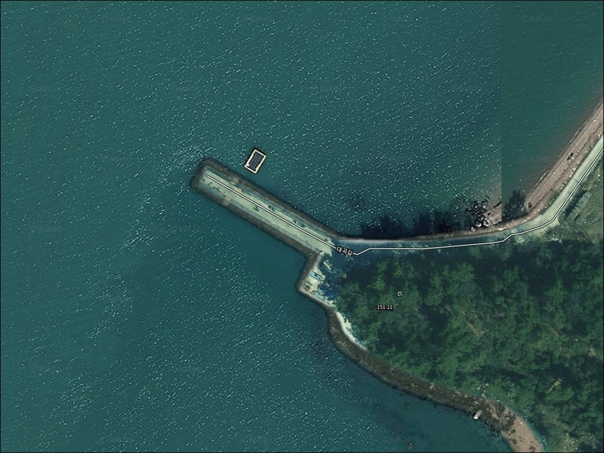
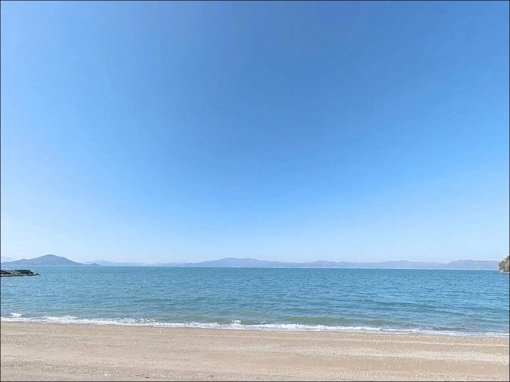
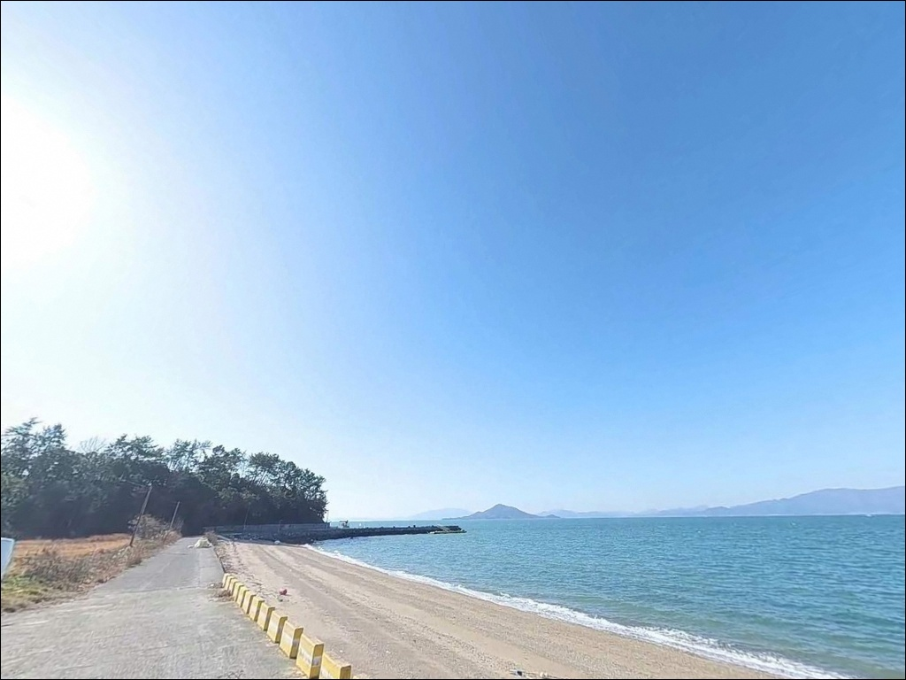
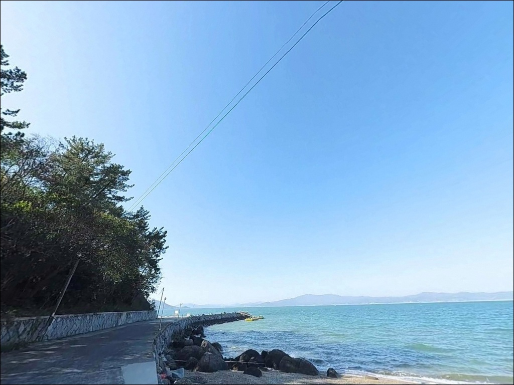
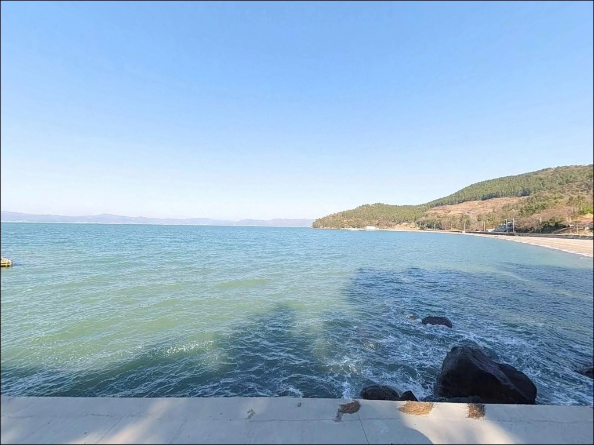
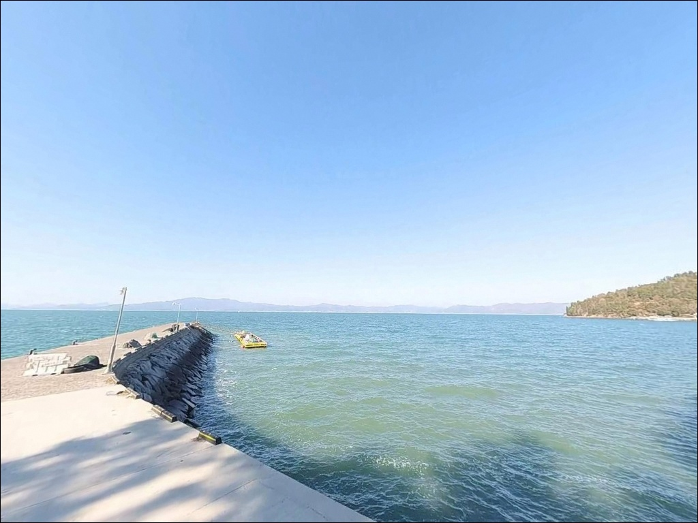
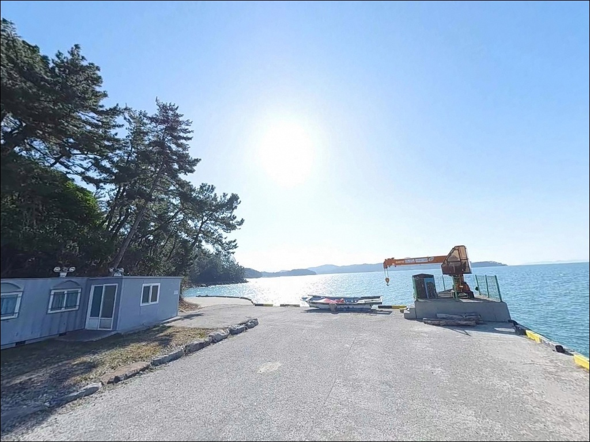
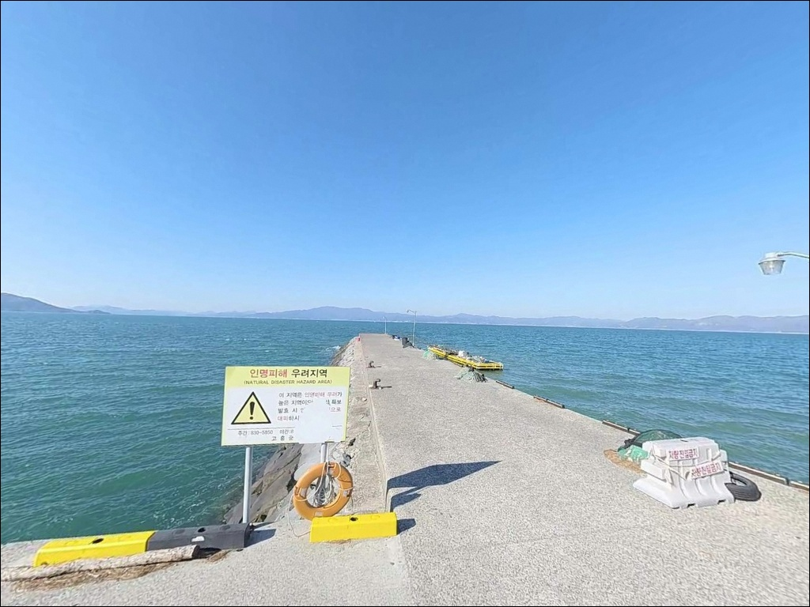
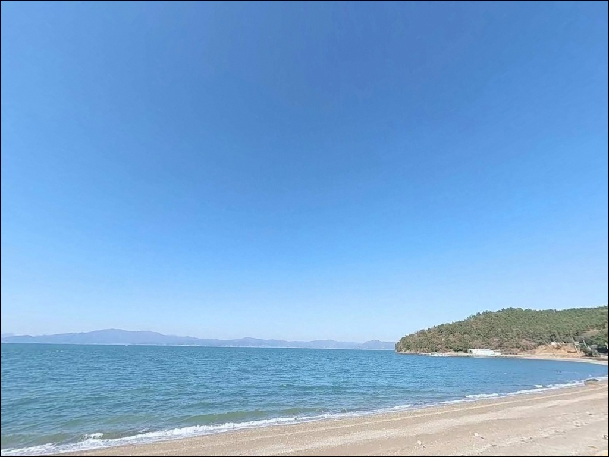

이 페이지에는 광고(제휴 링크 포함)가 있으며, 광고 링크를 통해 구매하면 운영자가 판매 수익 또는 수수료를 받을 수 있습니다. 포인트 사진: 카카오맵 스카이뷰·로드뷰. 이 페이지의 지도·사진 이미지는 카카오맵의 실제 서비스 이미지와 다를 수 있습니다.

가야리선착장
전남 고흥군 도덕면 가야리 산 127
만조가 아닌 시간에 이 선착장을 찾으면
드넓게 펼쳐진 갯벌만 마주하게 됩니다.
고흥만 내만 깊숙이 위치한 이 포인트는
물때가 낚시 가능 여부 자체를 결정하는
조간대 갯벌 지형이기 때문입니다.
고흥군 도덕면 가야리에 자리한 이 선착장은
공식 등록명이 없는 소형 접안시설입니다.
고흥만 방조제로 막힌 내만 환경 안쪽에 있어
파도 영향이 거의 없는 대신,
수심이 얕고 간조 시 바닥이 드러나는 구조라
만조 전후 타이밍이 출조의 전제 조건입니다.
이 글은 가야리선착장의
진입 동선, 차박 여건, 물때 판단 기준,
낚시 방식별 공략 조건에 집중합니다.
조황 단정이나 특정 어종 보장은
이 글의 범위에 포함되지 않습니다.

가야리선착장은 가야리 마을 안쪽을 거쳐
해안선 방향으로 이어지는 농어촌 소도로로 진입합니다.
포장 상태는 콘크리트 소포장 또는 좁은 마을 도로 수준이며,
왕복 교행이 불편한 구간이 존재합니다.
승용차 기준 진입은 가능하지만,
대형 SUV나 캠핑 트레일러를 끌고 간다면
출발 전 위성지도로 진입로 폭과
회차 가능 구간을 먼저 확인해 두는 편이 안전합니다.
선착장 진입부의 콘크리트 포장 공간에서
회차가 가능합니다.
막힌 도로 구조일 가능성을 감안해
진입 전 마지막 분기점에서
회차 공간 위치를 미리 파악해 두는 것이 기본입니다.
주차 후보는 두 곳입니다.
선착장 진입부 콘크리트 포장 공간에
소형차 2~4대 규모의 정차가 가능하며,
선착장 인접 해안 여유 공간도 활용할 수 있습니다.
별도의 대형 주차 공간은 없습니다.
어선 접안 동선을 막지 않는 자리를 먼저 확인하고
주차 위치를 정하는 것이 기본 매너입니다.

가야리선착장 주변은 민가가 도로를 따라
띄엄띄엄 분포하는 농어촌 마을 환경입니다.
심야 시간대 차량 통행이 거의 없어
조용한 편이며, 민가 밀집도가 낮아
시각적 프라이버시는 비교적 양호한 수준입니다.
다만 가로등은 선착장 진입부와
마을 방향 도로에 한정되며,
선착장 끝단은 야간 무조명 구간입니다.
개인 조명 장비는 반드시 준비해야 합니다.
고흥만 내만 구조상 파도 영향이 거의 없어
수면은 잔잔하게 유지됩니다.
차박 목적이라면 주차 공간이 협소하므로
1~2대 단위 소규모 방문이 현실적인 운용 방식입니다.
대형 캠핑카나 다인 차박은 공간 확보 문제로
사전 답사 확인이 필수입니다.
인근 해역에 양식장이 운영되는 구간이 있습니다.
야간 차량 전조등은 마을 방향을 향하지 않도록 하고,
소음과 조명 사용 시 인근 주민과
어업 활동에 지장이 없도록 배려하는 것이 기본입니다.

가야리선착장 자체에는
화장실, 급수, 편의점 등 시설이 없습니다.
완전 자급 체제로 진입하는 것이 기본입니다.
식수, 간식, 낚시 소품, 연료 모두
출발 전에 챙겨야 합니다.
가장 가까운 편의 인프라는
도덕면 소재지 방향으로 차량 10~15분 거리입니다.
마트, 식당, 주유소 등 기본 생활 인프라가
면소재지에 모여 있어
출발 전 보급 동선으로 활용하는 편이 효율적입니다.
반경 5분 거리에
고흥만 수변노을공원(도덕면 용동리)이 있습니다.
공공 주차장과 화장실이 갖춰진 공원으로,
낚시 가능한 선착장도 공원 내에 있습니다.
가야리선착장 방문 전후로
화장실 이용 거점으로 활용하기 좋습니다.

이 포인트에서 가장 먼저 확인할 것은
물때입니다.
고흥만 내만은 조간대 갯벌 지형이 발달해
간조 시 수심이 대폭 낮아지거나
바닥이 드러나는 구간이 생깁니다.
만조 전후 2~3시간이 실질적인 낚시 유효 시간대이며,
이 타이밍을 놓치면 채비를 던질 수심 자체가 없습니다.
바다타임에서 도덕면 기준 물때를 확인하고
출발 시각을 맞추는 것이 출조의 첫 단계입니다.
공식 명칭이 없는 소형 선착장인 만큼
웹에서 직접 조황 정보를 찾기 어렵습니다.
출조 전 고흥 도덕면 낚시 조황,
고흥만 방조제 조황으로 검색해
인근 해역의 최근 어황을 먼저 파악하는 편이 좋습니다.
선착장 끝단은 난간이 없으므로
야간 낚시 시 추락 주의가 필수이며,
구명조끼 착용과 헤드랜턴 지참은 기본입니다.
간조 시 갯벌에 진입하지 않습니다.
미끄러운 뻘 구간은 위험합니다.
인근 양식장 시설물 방향으로
채비를 투척하지 않는 것도 기본 매너입니다.

가야리선착장은 고흥만 내만 깊숙이 자리한
폐쇄형 내만 구조입니다.
외해와 직접 연결되지 않고
수로 형태로 이어지는 환경이라
기상이 나빠도 수면은 비교적 안정적입니다.
파도 걱정 없는 잔잔한 수면이
이 포인트의 가장 큰 장점입니다.
수심은 전반적으로 얕고 완만합니다.
만조 시 수심 2~4m 수준의 얕은 바닥 지형이 형성되며,
선착장 끝단 쪽이 상대적으로 수심이 깊습니다.
바닥은 뻘과 모래가 섞인 혼합 지형으로,
급심 구간은 선착장 끝단과 수로 중심부에 형성됩니다.
선착장 끝단에서 수로 방향으로 투척하는 것이
수심 확보 측면에서 가장 유리한 자리입니다.
조류는 외해처럼 빠르게 흐르지 않습니다.
내만형 수로 구조의 영향으로
조류 방향이 자주 바뀌는 편이지만,
수로를 따라 일정한 먹이 흐름이 유지됩니다.
만조 전후 이 흐름이 활성화될 때
저서성 어종의 움직임이 살아납니다.
출조 전 고흥 도덕면 일대 조황 검색을 꼭 해보시기 바랍니다.

선착장 끝단에서 수로 방향으로 캐스팅하는
원투낚시가 이 포인트에서 가장 자연스럽게 맞는 방식입니다.
뻘과 모래가 섞인 평탄한 바닥 지형은
밑걸림이 적고 원투 채비 운용이 안정적입니다.
고흥만 내만 해역 패턴상
붕장어, 보구치(백조기) 등 저서성 어종이
바닥을 오가는 구조이며,
만조 전후 정조 타이밍이 집중 공략 시간대입니다.
루어낚시와 에깅도 시도해볼 수 있습니다.
고흥 연안 전역이 봄~가을 시즌
갑오징어와 문어 루어 포인트권에 포함됩니다.
만조 전후 연안 캐스팅으로
선착장 끝단 수로 경계면을 공략하는 방식이 유효하며,
4월 이후 갑오징어 루어 시즌이 열리면
이 일대 내만 해역도 탐색 가치가 있습니다.
찌낚시도 이 포인트 구조에 잘 맞습니다.
유속이 완만해 채비 안정성이 높으며,
선착장 석축 주변이나 수로 가장자리에서
내만 흘림낚시 방식으로 접근하면
생활 어종 마릿수 낚시를 기대해볼 수 있습니다.
소형 지그헤드 채비로 수로 중심부를 천천히 탐색하는
라이트 루어 방식도 이 포인트 환경에 어울립니다.

가야리선착장이 기대에 못 미칠 때
가장 먼저 이동할 곳은
고흥만방조제(도덕면 고흥만로 일대)입니다.
같은 도덕면 권역에 있으며 차량 5분 내외 거리입니다.
방조제 외측에서 원투낚시,
내측 공원 구간에서 루어낚시가 가능하고
차박 공간으로도 활용됩니다.
학꽁치 낚시터로도 알려진 도덕면 대표 포인트입니다.
은전방파제(도덕면 오마리 일대)도
가야리선착장에서 4~5km 거리의 대안입니다.
규모 있는 방파제 2개 구조로
외항 포인트가 형성되어
원투와 루어 모두 운용 가능합니다.
만조 전후 수심이 올라오는 타이밍에 집중하면
어종 다양성이 가야리선착장보다 높은 편입니다.
반경 10km 내로 이동하면
녹동항과 발포항 등
고흥권 대표 낚시 항구를 선택지로 둘 수 있습니다.
수심이 깊고 시설이 정비된 편이라
날씨가 바뀌거나 물때가 맞지 않을 때
피난 포인트로 활용하기 좋은 동선입니다.

원투낚시나 라이트 루어로
조용하게 바닥 어종을 노리는 낚시인이라면
가야리선착장의 내만 환경은
잘 맞는 구조입니다.
잔잔한 수면, 밑걸림 적은 혼합 바닥,
사람이 거의 찾지 않는 한적함이
이 포인트의 실제 강점입니다.
다만 물때를 맞추지 않고 도착하거나,
편의시설을 기대하고 간다면
기대와 다른 상황을 만나기 쉬운 곳입니다.
만조 타이밍, 자급 준비, 진입로 사전 확인,
이 세 가지를 갖추고 간다면
나만 아는 조용한 포인트가 될 수 있습니다.
아직 많이 알려지지 않은 포인트를 직접 발굴하는 것을
즐기는 낚시인이라면
먼저 답사해 두고
물때와 계절에 맞춰 재방문하는 방식이
이 선착장을 가장 잘 활용하는 방법입니다.
밤낚시를 마치고 고흥만의 조용한 내만 앞에서
하룻밤 차박으로 마무리하는 것도
나쁘지 않은 선택입니다.